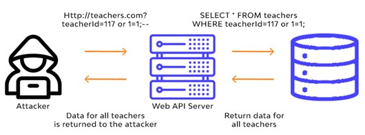

SQL Injection: Research Paper
Jun 15, 2025 10-15 min read ArticleDrafted by Krishna Dwivedi
Objective
The Main goal is to Learn, Understand & get familiar with:
- What is SQL (Structured Query Language) ??
- What is SQLi (SQL Injection) ??
- How SQLis works ??
- Ways to Perform SQLi
- Types of SQLi
- Effects of SQLi
- Examples
- Common Ethical Hacking & Pentesting Tools (used to identify SQLi)
- Web Apps & Labs to Practice SQLis
- Study Some SQLi Cases
- How to prevent SQLi
- Brief summary Table with Attack types, e.g., Prevention strategies
- Conclusion
What is SQL (Structured Query Language) ??
SQL is Developed in 1970s and became the standard database management language. If a website needs to access the database on its server to manipulate (i.e. store, read, update, delete) data (information), it uses SQL to handle that request (called Query).
SQL is a broad and flexible language that gives Database designers a huge number of possibilities. Most designers create databases with their own unique set of SQL rules (or queries) to best suit their particular business needs. We can’t simply copy and paste one database’s SQL query onto another, because different databases may have been built in completely different ways.
What is SQLi (SQL Injection) ??
If a web developer isn’t careful, and they might build their site in such a way that a malicious actor can cause unintended effects in its database. That's how SQLis happen.
The hacker inputs, or injects, malicious SQL code (a form of malware known as the payload) on the website and fools it into delivering that code to its database as a legitimate query to be executed by the DB.
Real Life Analogy
Imagine you're at a bank, filling out a form to check your account balance. But someone else walks in and writes something sneaky on their form, like
“Show my balance; then give me money from everyone’s account.”
If the bank doesn’t properly check what’s written, it might follow those harmful instructions and do the task stated.
Similar are the SQLis that allows attackers to bypass security and execute malicious payloads to perform some action
How SQLi Works ??
1. Normal Login Scenario
User enters login details:
Username => admin and Password => adminpasswd
The web application might run this SQL query:
SELECT * FROM users WHERE username = 'admin' AND password = 'password123';If the credentials are correct, the user is logged in (as demonstrated below üëá)
2. Malicious Input Example (SQL Injection)
An attacker enters:
Username => admin' -- and Password => (left blank)
This changes the SQL query to:
SELECT * FROM users WHERE username = 'admin' -- ' AND password = '';The -- is a SQL comment, so everything after it is ignored. The query now only checks if the username is "admin", bypassing the password check.
3. Result
The attacker gains unauthorized access to the admin account without knowing the password. (as demonstrated below üëá)
Conclusion: This happens because user input is directly inserted into SQL queries without validation or escaping.
Ways to Perform SQL Injection (SQLi)
1. SQL Injection via User Input
This is the most common method. Websites that collect user input (e.g., forms, comment sections) without proper input sanitization are vulnerable. Attackers inject SQL code instead of normal input, causing the server to execute malicious commands.
Example: An attacker submits SQL code through a job application form instead of their real name to manipulate how the server processes the data.
2. SQL Injection via Cookie Modification
Cookies can store user-specific data. If a server blindly trusts cookie values without validation, attackers can modify them to inject SQL commands into the backend database.
3. SQL Injection via Server Variables
Server variables (like headers and user agent strings) are often logged or processed by applications. If the data isn't sanitized, an attacker can inject SQL through these variables.
4. SQL Injection via Automated Hacking Tools
Tools like SQLMap automate the detection and exploitation of SQL injection vulnerabilities. While useful for security testing, they can also be used maliciously.
5. Second-Order SQL Injection
This advanced method stores a harmless-looking SQL payload in the database that only becomes dangerous when triggered later during processing. It bypasses initial input validation by executing at a later stage.
Analogy: It's like someone pretending their name is "Nobody" to avoid getting in trouble — it works at first, but later it causes even more problems when others try to figure out what really happened.
Types of SQLi

1. In-Band SQLi (Classic SQLi)
This is the most straightforward and commonly exploited form of SQLi, where attackers both launch the attack and receive results using the same communication channel.
- Error-Based SQLi: Exploits database error messages to gather information.
- Example:
Might return all users if not properly sanitized.xyz' AND (SELECT CASE WHEN (Username = 'Administrator' AND SUBSTRING(Password, 1, 1) > 'm') THEN 1/0 ELSE 'a' END FROM Users)='a
- Example:
-
Union-Based SQLi: Combines the results of the original query with injected SELECT statements.
- Example:
' UNION SELECT username, password FROM users--
- Example:
2. Inferential SQLi (Blind SQLi)
No data is directly returned to the attacker; instead, they infer results based on application behaviour or response time.
- Boolean-Based Blind SQLi: The application responds differently depending on the truth of a condition.
- 
- Example:
' AND 1=1--(true) Vs' AND 1=2--(false)
- Example:
-
Time-Based Blind SQLi: Uses database time delays to infer information.
-
Example:
causes a delay if the injection is successful.' WAITFOR DELAY '00:00:05'--
-
Example:
3. Out-of-Band SQLi
Exploits functionalities where data is transferred over different channels, like HTTP or DNS.
- Useful when the attacker cannot use the same channel to extract data.
- Example: Triggering the database to make an outbound DNS request to a server controlled by the attacker.
4. Advanced SQLi Techniques
-
Second-Order SQLi: Malicious input is stored in the database and later used in a query without proper sanitization.
- Example:
which is stored and executed when retrieved.'; DROP TABLE users;--
- Example:
-
Stacked Queries: Multiple SQL statements are executed in a single call, provided the backend supports it.
- Example:
SELECT * FROM users; INSERT INTO admins VALUES ('attacker');--
- Example:
- These are particularly dangerous in applications that dynamically generate SQL based on user roles, permissions, or LLM-generated logic.
Effects of SQLi
For Individuals
- Data Theft: Personal information like passwords, emails, and financial details can be stolen.
- Identity Theft: Attackers may use stolen data to impersonate victims.
- Privacy Violation: Sensitive data can be exposed publicly or sold on the dark web.
- Financial Loss: Bank account or credit card info may be misused, causing monetary loss.
- Account Takeover: Unauthorized access to user accounts can lead to further exploitation.
For Businesses
- Data Breaches: Confidential customer and company data can be leaked.
- Reputation Damage: Loss of customer trust and brand image due to security incidents.
- Legal Consequences: Non-compliance with data protection laws can lead to fines and lawsuits.
- Financial Costs: Expenses related to breach investigation, remediation, and potential penalties.
- Operational Disruption: Systems may be compromised or taken offline, affecting business continuity.
Examples
Common Ethical Hacking & Pentesting Tools
Sqlmap
- An open-source tool for automating SQL injection detection and exploitation.
- It supports WAF bypassing through options like
--prefixand--suffixfor payload customization, such as:
sqlmap -u "https://example.org" --prefix="'AND 1=2 UNION SELECT"Burp Suite
- Offers features for SQL injection testing via its Proxy and Intruder tools, allowing payload manipulation and WAF evasion through fuzzing and parameter analysis.
- In 2025 updates, it includes automated scanners that simulate attacks while logging traffic, ensuring ethical use by limiting scope in pentesting labs.
OWASP ZAP
- capabilities for secure pentesting with automated scanners and active/passive vulnerability checks, including SQL injection detection.
- It’s 2025 enhancements feature WAF bypass testing via scripting and proxy interception, promoting ethical practices by focusing on non-destructive scans in isolated setups.
Web Apps & Labs to Practice SQL Injection (SQLi)
PortSwigger Web Security Academy- Type: Online labs
- Focus: SQLi labs with browser-based challenges
- Note: From the makers of Burp Suite; highly practical
- Type: Virtual Machine
- Includes: DVWA, bWAPP, WebGoat, Mutillidae II, and more
- Focus: OWASP Top 10, including SQLi
- Note: All-in-one environment for safe local practice
- Type: Online platform
- Focus: Realistic machines & modules for SQLi exploitation
- Examples: Machines like Knife, Spectra; SQLi course in HTB Academy
- Type: Online platform
- Focus: Hands-on SQLi labs with guided walkthroughs
- Examples: SQL Injection, OWASP Top 10 rooms
- Type: Downloadable or hosted modern web app
- Focus: Gamified learning with modern vulnerabilities including SQLi
- Note: Includes hints and a scoreboard
- Type: Public online test site
- Focus: Simulated SQLi and other common flaws
- Note: Great for manual testing; avoid automated scans
- Type: Local PHP-based application
- Focus: Practice SQLi and test web scanners
- Type: Pre-configured Virtual Machine
- Focus: Includes apps and tools for testing web security, including SQLi
- Type: Downloadable virtual machines
- Focus: Realistic challenges with SQLi and more
- Examples: Stapler, Mr. Robot, Simple CTF
- Type: Online platform (free & paid)
- Focus: Practical SQLi labs from beginner to advanced
- Examples: Introduction to SQLi, From SQLi to Shell
SQLi Attacks Case Studies (Brief)
Tamil Nadu Government Portal (April 2025)- Incident: A critical SQLi vulnerability was discovered in a Tamil Nadu government web portal, exposing sensitive citizen data.
- Impact: The breach revealed over 50,000 Aadhaar numbers, 100,000+ user credentials, and 1 million student records, including personal information and authentication tokens.
- Method: The attacker exploited a time-based SQL injection to dump the entire database and bypass login mechanisms.
- Source: Hack-Bat's Report on Medium
- Incident: A bug bounty researcher identified a severe SQLi vulnerability in an Indian government website.
- Impact: The flaw exposed millions of records, including Aadhaar numbers, bank details, and passwords stored in plain text.
- Method: The attacker used automated tools to exploit the vulnerability, leading to unauthorized access to sensitive data.
- Source: Prashant Kamkar's Writeup on Medium
- Incident: The Integrated Road Accident Database (iRAD) portal, part of the Ministry of Road Transport and Highways, suffered a data breach.
- Impact: Sensitive information such as user IDs, names, emails, mobile numbers, and passwords were exposed.
- Method: An SQL injection vulnerability allowed attackers to access and leak the portal's source code and user data.
- Source: Cyber Unfolded's Article
- Incident: BSNL, India's state-owned telecom company, experienced a data breach.
- Impact: Approximately 32,000 lines of data were leaked, including email addresses, billing information, contact numbers, and other critical data.
- Method: The breach involved an SQL injection technique, raising concerns about the security of BSNL's systems.
- Source: Cyber Unfolded's Article
- Incident: A critical SQLi vulnerability was found in the SMU portal.
- Impact: The flaw allowed unauthorized access to the admin panel, exposing student records, contact information, admit cards, assignments, and results.
- Method: By manipulating the login parameters, attackers could access sensitive administrative data.
- Source: ISOEH's Article
- Incident: An alleged SQL injection attack compromised an Indonesian online student admission system, leading to the theft of data from 13,291 users.
- Impact: The leaked dataset included sensitive information such as student names, contact details, identity numbers, and educational records.
- Details: The breach underscores persistent vulnerabilities in Indonesia’s digital infrastructure, particularly within the education sector.
- Source: Cyber Press Article
- Incident: The hacking group "ResumeLooters" utilized SQL injection and Cross-Site Scripting (XSS) attacks to compromise 65 legitimate job listing and retail sites.
- Impact: Over 2 million job seekers' personal data, including names, email addresses, phone numbers, and employment history, were stolen.
- Details: The attackers employed open-source tools like SQLmap to automate the exploitation of SQLi vulnerabilities, emphasizing the ease with which such attacks can be carried out.
- Source: Bleeping Computer Article
Prevention Strategies
Effective prevention combines foundational and advanced methods:
- Parameterized Queries: Use prepared statements to separate inputs, e.g., in Java:
PreparedStatement pstmt = connection.prepareStatement("SELECT * FROM users WHERE username = ?"); pstmt.setString(1, username); - Input Validation and Sanitization: Enforce allow-lists to sanitize inputs, blocking characters like
'or;and combine with context-aware checks to block encoded payloads. - Least Privilege Access: Limit database permissions to essentials, reducing attack impacts.
- WAF and Monitoring: Deploy web application firewalls with advanced rules to detect anomalies, though attackers bypass them using techniques like whitespace manipulation or encoding.
- Multi-Factor Authentication: Adds barriers against bypass attempts in AI-integrated apps, reducing bypass success in modern apps.
- Encryption: Store sensitive information, such as passwords and personal data, using strong encryption methods.
- Regular Audits: Conduct regular security audits and penetration testing to identify and fix vulnerabilities.
Summary Table
SQLi Type Description Example Attack Prevention Strategy
In-Band (Error-Based) Extracts info via errors ' OR 1=1-- Parameterized queries
In-Band (Union-Based) Combines queries for data extraction ' UNION SELECT username, password FROM users-- Input validation and least privilege
Inferential (Blind) Infers data from responses ' WAITFOR DELAY '00:00:05'-- WAF integration
Out-of-Band Uses external channels DNS exfiltration payloads Monitoring and MFA
Second-Order Stored payloads executed later '; DROP TABLE users;-- Validate stored data
Stacked Queries Chains multiple statements SELECT * FROM users; DROP TABLE data;-- Disable multi-query execution
Conclusion
This exploration into SQL Injection (SQLi) has provided a comprehensive understanding of how SQL works and how vulnerabilities in its implementation can be exploited through SQLi attacks.
We’ve delved into the mechanics of SQLi, examined various types and methods of exploitation, and studied real-world examples to highlight its potential impact. Ethical hacking and penetration testing tools were introduced as essential resources for identifying such vulnerabilities.
Additionally, practical labs and case studies helped reinforce learning and skill-building. Most importantly, we discussed preventive strategies and best practices to safeguard applications from SQLi threats. With this foundational knowledge, learners are now better equipped to recognize, mitigate, and defend against SQL injection vulnerabilities in real-world environments.